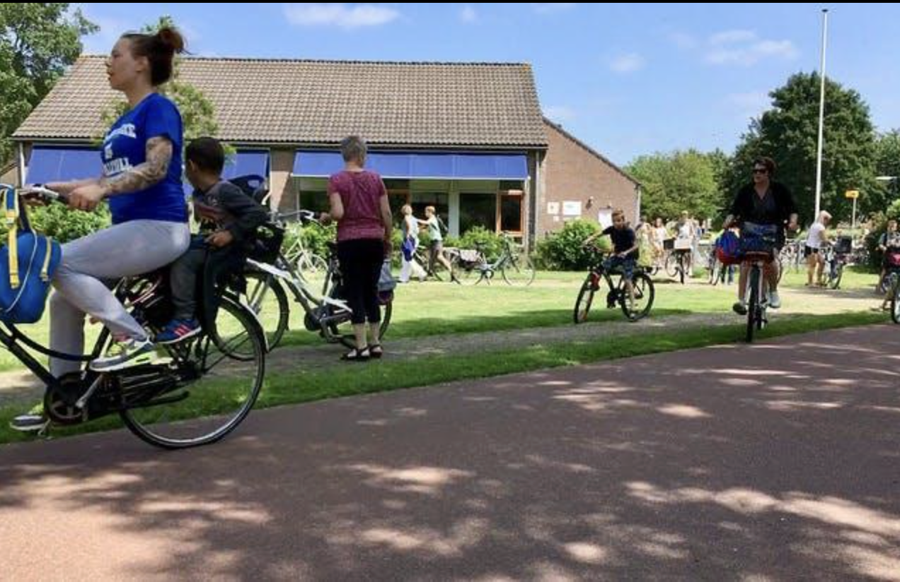
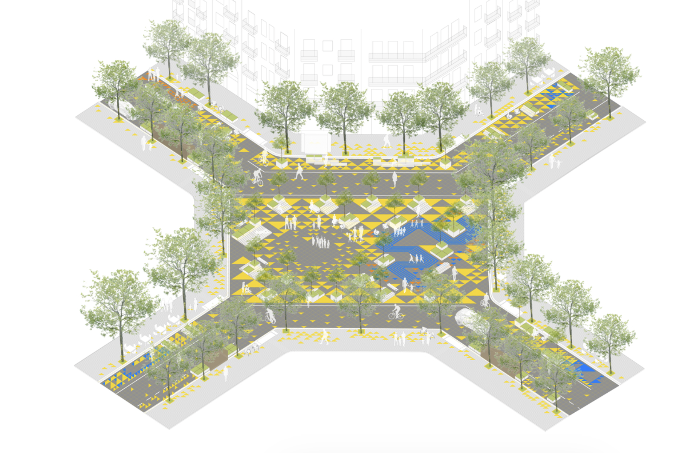
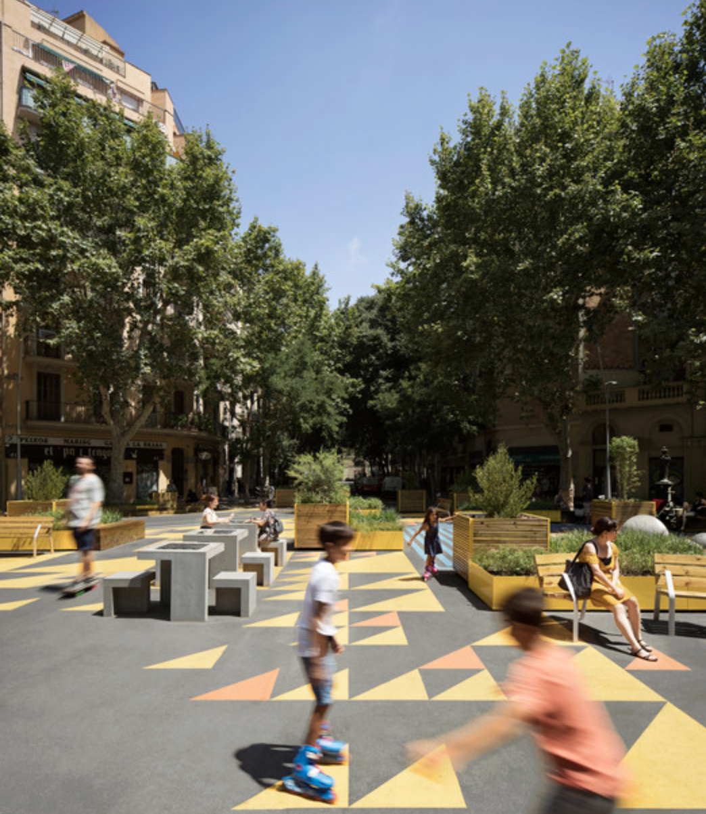
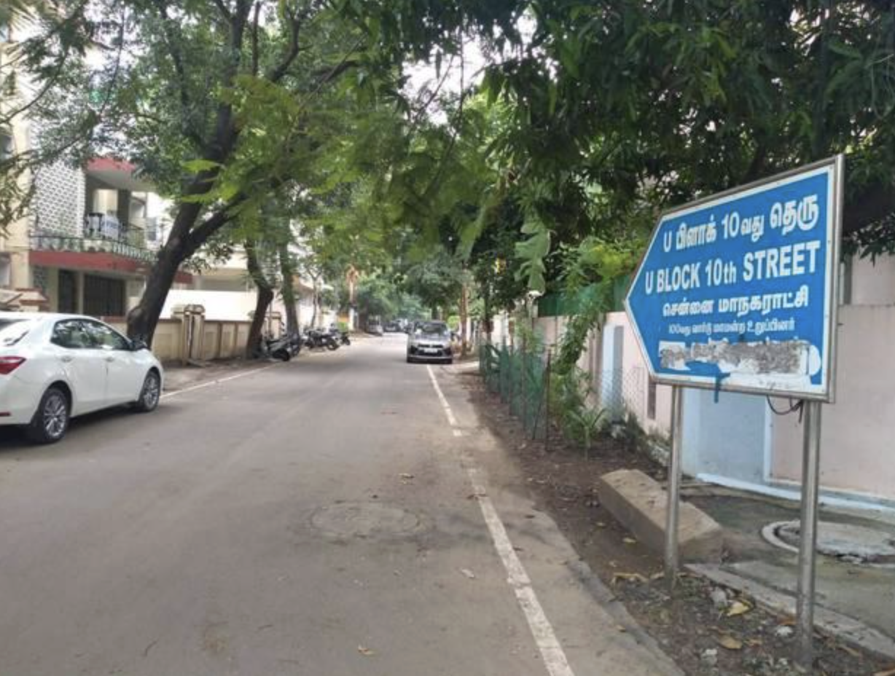

Slide Version of Urban Planning in Chennai
Issues, Challenges, and a Repair Sequence
July 9, 2026
Roadmap
The Question
The question
Does Chennai work as a living system for ordinary people?
This slide essay tests Chennai across six functions: planning, finance, engineering, maintenance, enforcement, and democratic accountability, through four of its most celebrated neighbourhoods.
The main finding
Chennai’s urban planning falls short, not because of population growth or lack of money.
It falls short because land-use planning, infrastructure finance, engineering delivery, maintenance, enforcement, and accountability are not joined under one answerable metropolitan operating system [1].
Why Chennai matters
Madras was the first city I stayed in after finishing high school, in 2009. I lived in Chrompet, shared a room with college students and working bachelors, and took the suburban train all the way to Chennai Beach. The city gave me freedom before it gave me anything else: bus stands, colleges, jobs, migrants, students, vendors, families.
A world-class Chennai is not for only the wealthy, the car-owning, or the politically connected. It is for the student with a black-and-white phone, the vendor on Ranganathan Street, the elder crossing Second Avenue, and the family in Velachery raising its plinth one more time.
Foundations
The theory frame
| Thinker | What the idea asks Chennai to do |
|---|---|
| Patrick Geddes | Survey before plan: study place, work, and folk before drawing schemes [2]. |
| Otto Koenigsberger | Plan from climate outward: heat, shade, rain, ventilation, and materials are not decoration. |
| Jane Jacobs | Judge streets by mixed use, active edges, short blocks, and everyday public life [3]. |
| Jan Gehl | Ask whether streets invite people to stay, sit, meet, and watch, not only to pass through [4]. |
| Christopher Alexander | Protect living patterns: shade, corners, verandas, local shops, and daily routines [5]. |
| Ananya Roy | Recognize how the state manufactures informality through exceptions and selective enforcement, for the rich as much as the poor [6]. |
| NITI Aayog | Fix fragmented authority, weak capacity, missing master plans, and poor coordination [1]. |
Climate is the first constraint
- Hot, humid, coastal, monsoon-dependent city
- May–June average daily maximum near 37°C; extreme days cross 40°C [7]
- Annual rainfall near 1,377 mm, concentrated in the Northeast Monsoon: October–December alone bring roughly 856 mm [7]
- Cyclone and storm-surge exposure on the Bay of Bengal [8]
- Moderate seismic risk: Zone III [9]
Rain, drainage, coastal flooding, heat, and emergency infrastructure cannot be planned as separate subjects. A climate-resilient Chennai designs streets, drains, wetlands, buildings, transport, parks, trees, power systems, and emergency infrastructure as one system, with enforcement and accountability attached.
The agency problem
| Function | Main agency | The planning problem |
|---|---|---|
| Land use, zoning, permissions | CMDA | Plans the city, but does not operate every system [10]. |
| Streets, drains, parks, solid waste | GCC | Maintains local civic systems, but depends on other agencies. |
| Water and sewerage | CMWSSB | Sewerage failures show up as drainage and river problems. |
| Transport coordination | CUMTA, MTC, CMRL, Southern Railway | Mobility is split across buses, metro, rail, roads, and walking. |
| Rivers, tanks, reservoirs | WRD / PWD | Water follows basins, not departmental boundaries. |
| Major roads and highways | TN Highways Department | Roads can become flood barriers when built without cross-drainage. |
| Pollution, land records | TNPCB, Revenue, local bodies | Enforcement is fragmented and often selective. |
Result: one Chennai neighbourhood depends on ten or more agencies to function, and no single authority is answerable for whether the neighbourhood works as a whole.
Planning history: many plans, weak delivery
| Period | Planning record | What it reveals |
|---|---|---|
| 1957 | General Town Planning Scheme for Madras City | Early physical planning, too limited for a metropolitan region. |
| 1967 | Madras Interim Plan | Recognition of metropolitan scale. |
| 1971–1991 | Madras Metropolitan Plan | Land use, utilities, transport, slums, health, education, finance, institutions; growth outpaced delivery. |
| 1975/76 | First Master Plan | Statutory land-use control; the city expanded beyond its assumptions. |
| 2008–2026 | Second Master Plan | Metropolitan land use and compact growth; implementation and enforcement stayed weak [11]. |
| 2017 | CAG flood-management audit | Weak planning, poor enforcement, encroachment, and poor coordination worsened flooding [12]. |
| 2026–2046 | Third Master Plan process | The key test: a delivery system, or another land-use map? [13] |
The statutory failure: the Tamil Nadu Town and Country Planning Act, 1971 requires a five-yearly review of the Master Plan. It has never once been performed on schedule [14].
Chennai’s Flooding Problem
Flooding: the wrong frame and the right one
Chennai treats flooding as a drainage construction problem. But major floods have recurred in 1943, 1976, 1985, 1996, 2005, 2015, 2021, and 2023 [12]. Stormwater drains alone cannot solve a basin-level problem while canals are choked, wetlands shrink, river mouths block, sewage enters drains, and floodplains keep urbanizing.
Flooding is a watershed-governance problem. A world-class response connects land-use zoning, tank restoration, marsh protection, sewerage enforcement, canal maintenance, culvert hydraulics, pumping capacity, flood shelters, and transparent real-time reservoir operation into one system.
2015: flooding as system failure

The 2015 floods combined extreme rainfall, reservoir operations, urbanization, wetland loss, weak drainage, blocked waterways, and fragmented governance into a citywide disaster [12]. Floodplain encroachment alone raised the Adyar’s 2015 flood peak at the river mouth by 188% compared with the 1991 floodplain, and cut time-to-peak by 48 hours [15].
The Benchmark
Three working models
A child can cycle safely across the whole town, because mobility, schools, streets, and neighbourhood structure were planned together, and kept planned as the town grew.
Tram, trees, housing, cycling, and streets designed as one everyday living system. Density arrived with its infrastructure, not ahead of it.
A 3×3 grid converted from car throughput into civic space: NO₂ down 25%, noise down 2.5–4 dB, local retail up 30%, and over 60% of residents reporting improved well-being.
None of these is a miracle. Each is an administrative decision, made once and then maintained as permanent civic discipline.
Visual benchmark: Houten


Visual benchmark: Freiburg / Vauban


Visual benchmark: Barcelona Superblock


Four Neighbourhoods as Tests
The four cases


Case 1: Boat Club
- Old canopy, continuous shade
- Quiet streets and footpaths
- Low-rise garden plots
- Walking comfort good enough that people cross the city to walk here
- Strong neighbourhood identity
- Excellence is inherited, not designed or protected: no conservation regime guards the canopy or pervious ground [2]
- Public life is thin behind compound walls; streets are walkable but socially closed [3], [4]
- Residents once sought gates to keep the public off public streets; GCC refused [18]
- The Adyar floodplain risk is externalized: encroachment raised the 2015 flood peak 188% at the river mouth [15]
Boat Club: repair sequence
- Notify the Adyar floodplain and flood-risk overlays into the Third Master Plan.
- Restore the Adyar as infrastructure, published cross-sections before and after desilting.
- Publish transparent Chembarambakkam operation rules tied to forecasts [19].
- Intercept sewage before it reaches the river; publish monthly water quality.
- Protect canopy and pervious ground during every redevelopment.
- Keep public streets permanently public, codify the principle GCC already defended.
Lesson: wealth is not a public system.
Case 2: Anna Nagar
- State-planned TNHB township at scale, laid out from the 1960s [20]
- Hierarchical grid, blocks, parks, schools, bus terminus
- Cross-class integrated housing from the start
- Green cover above 20% against a city average near 15%
- Density tripled through individually legal approvals while drains, water, and parking stayed at 1968 capacity
- The five-yearly statutory review has never been performed [14]
- The plot-level sponge, gardens, wells, unpaved margins, was paved over, converting a sponge into a funnel [21]
- Drainage is contracts, not a system: only ~15% of the city’s network is even mapped [22]; the outfall, the Otteri Nullah, is encroached and silted [23]
Anna Nagar: repair sequence
- Prepare a statutory Local Area Plan, and keep the five-year statutory clock for the first time.
- Map, then model, the Korattur–Padi–Anna Nagar–Otteri Nullah–Cooum sub-basin as one hydraulic system.
- Rebuild the sponge, permeable paving, protected soil, verified recharge wells per approval.
- Enforce the mill-and-relay road rules that already exist, with published pre/post street levels.
- Count the downstream: score every approval on the peak flow it adds to the Otteri Nullah.
- Give the plan a custodian: an empowered ward committee with a published maintenance budget.
Lesson: a plan is not a fully planning operating system with accountability and enforcement.
Case 3: T. Nagar
- A residential 1920s street grid carries the retail load of a national shopping centre; the 2013 redevelopment plan was never delivered [25]
- The most valuable streets have the weakest enforcement: fire-safety and building violations recur on Ranganathan Street and Usman Road [26]
- Built on the drained Long Tank; the Mambalam canal outfall stays fragile [27]
- The plaza was inaugurated, then poorly operated: vehicles and parking returned [28]
T. Nagar: repair sequence
- Re-plan it as what it is: a managed metropolitan retail district, with capacity calculated for actual footfall.
- Create a permanent plaza operator with daily cleaning, enforcement, vending, loading, and maintenance powers.
- Publish building-safety, fire-access, parking, and encroachment audits, starting with Ranganathan Street.
- Legalize vendors into the plan under the Street Vendors Act, pitches, not eviction cycles [29].
- Fix the water as one system: model Ashok Nagar–West Mambalam–T. Nagar through the Mambalam canal to the Adyar.
- Price curb space and loading time; convert commercial success into public-realm funding.
Lesson: a law is not enforcement, and a project is not an operation.
Case 4: Velachery
- Jobs and housing supply; the address of arrival for many migrants
- IT-corridor connectivity, MRTS, and arterial access
- Strong middle-class urban demand
- Built inside the Pallikaranai drainage system, which drains ~250 km² of south Chennai [17]
- The marsh shrank from ~5,000 ha (1975) to ~695 ha (2016), largely through state-approved IT-corridor construction [12]
- Velachery Lake shrank from ~265 acres to ~55 acres [30]
- Households privately buy flood protection, raised plinths, pumps, rebuilt ground floors, paying instalments on a public decision
Velachery: repair sequence
- Legally demarcate the Pallikaranai marsh, lake chains, channels, buffers, and floodplain in the Third Master Plan.
- Restore Velachery Lake and its surplus channels as infrastructure, housing-first resettlement, then restoration.
- Build one public basin model: lake → Veerangal Odai → marsh → Okkiyam Madavu → Kovalam Creek → sea.
- Audit every road, rail line, and culvert that interrupts natural drainage; redesign with cross-drainage.
- Complete Perungudi dumpyard closure with biomining, leachate control, and ecological restoration [31].
- Create a Pallikaranai watershed authority with budget, enforcement power, and an annual public report.
Lesson: hydrology is the first master plan.
What the four cases teach together
| Question | Boat Club | Anna Nagar | T. Nagar | Velachery |
|---|---|---|---|---|
| Origin | Colonial estate, privately consolidated | State-planned TNHB township | First planned township (1923–25), on the drained Long Tank | Village urbanized by the IT corridor, on the Pallikaranai floodplain |
| What works | Shade, calm, street quality | Grid, parks, schools, green cover | Economic vitality, the plaza’s design | Jobs, housing, transit access |
| What failed | Public systems around private perfection | Plan never renewed as density tripled | Enforcement and operation | Hydrology zoned away as real estate |
| Flood type | Riverine: the Adyar in spate | Pluvial: concretisation | Pluvial on a drained lakebed; overloaded canal outfall | Basin: the sump of south Chennai |
| First step | Adyar basin authority | Local Area Plan with a custodian | Plaza operator + building audit | Demarcate the marsh; restore the lake |
The Repair
The six missing connections
planning + finance + engineering + maintenance + enforcement + accountability
Chennai’s problem is not that nobody plans, builds, or spends. It is that these six functions do not stay connected through one answerable delivery system after approval, tender, construction, and inauguration. Four neighbourhoods, four origins — the same six connections missing every time.
The neighbourhood test
| System | World-class means | Simple test |
|---|---|---|
| Walking | People walk without entering traffic | Can a child walk 500 m safely? |
| Crossings | Frequent, placed where people cross | Do people cross safely, or dart through traffic? |
| Shade | Continuous public shade | Is the street walkable at 1 pm? |
| Stormwater | Road → inlet → drain → canal/tank works | Does water disappear after rain? |
| Sewage | Fully separate from stormwater | Does the drain smell in dry weather? |
| Parks | Lit, maintained, used by all ages | Do women and elders use it after dark? |
| Daily needs | Milk, medicine, school, bus stop nearby | Can you buy milk without a two-wheeler? |
| Parking | Never captures footpaths or corners | Can an ambulance pass? |
| Homes | Verandas and shade facing the street | Does the house improve the street or turn its back on it? |
| Maintenance | Budgets, schedules, complaint timelines | Who last desilted the drain, and who is answerable? |
What the Third Master Plan must become
- Not another land-use map, but a delivery system [13].
- Floodplain, marsh, tanks, canals, drains, and outfalls governed by basin logic, with basin authorities that match the water map instead of the department map.
- The statutory five-year review kept for the first time in fifty years.
- Public reporting of drain dimensions, desilting schedules, tree canopy, flood registers, water quality, and project status — so lapses become attributable.
- Statutory Local Area Plans for high-pressure neighbourhoods.
- One answerable mechanism coordinating CMDA, GCC, WRD, CMWSSB, Highways, CUMTA, TNPCB, Revenue, and ward committees.
Repair sequence for Chennai
- Treat watersheds as planning units.
- Create neighbourhood-level operating plans with named custodians.
- Tie approvals to delivered infrastructure capacity.
- Publish maintenance schedules and failure metrics.
- Fund the public realm from local land-value gains.
- Make enforcement predictable, public, and non-selective.
- Measure success through everyday tests: walking, shade, drains, sewage, parks, crossings, and safety.
Conclusion
Chennai already has the plans, the engineers, the money, the institutions, and the memory of every flood.
Copenhagen mapped its flow paths after one cloudburst and rebuilt its streets as drainage [32]. Barcelona gave a 3×3 grid back to its people. Houten planned for the child on a cycle, and kept planning. These are administrative decisions, not miracles. What Chennai needs is one answerable system connecting planning, finance, engineering, maintenance, enforcement, and accountability under authorities that match its watersheds and neighbourhoods.
Final line
Chennai/Madras is transformable into World Class Urban Planning System.
What’s required is maintenance and enforcement and accountability under one Urban delivery system.
References
Notebook of Rick Rejeleene · Urban Planning in Chennai